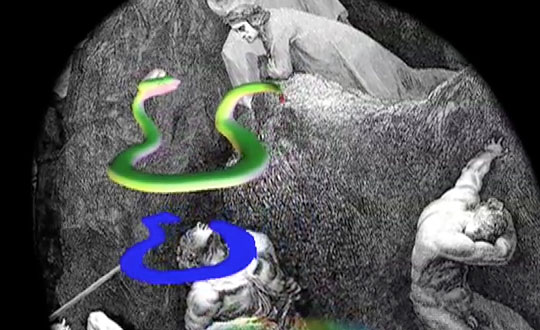

Requires Quicktime. About 3 min. 40 sec. playing time.Halina Witek, born in Poland, studied architecture at the Technical University of Wroclaw and at the Art Academy in Wroclaw. She was founder, director Theatre Het Klein in Eindhoven, Holland, 1975 - 2005 and founder and art director Project Klein in Eindhoven from 2005. Her work includes theatre decor, costume design, modern dance choreography, theatre direction, acting, mime, video, computer animations, and 3D multimedia installations. She uses an interest in science, especially physics, as inspiration.
She writes, "The Divine Comedy is the inspiration for the computer animation entitled: 'The Travel Diary'. The fascinating journey of a scientist and artist in discovering and creating; a travel through Hell/Inferno, Canto XXXIV.135:
...We bounded up, "The scientist is personified by the personage of Dante, while the snake stands for the artists. They enter into mutually permeating spaces. Such spaces are suspended between the tangible realities (such as theories, metaphors, symbols) on the one hand, and the plausible modes of being (such as imagination, sensibilities, etc) on the other hand."
he first and I second,
Until, through a round opening,
I saw
Some of the lovely things
the heavens hold:
from there we came out
to see once more the stars.